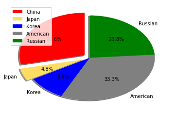
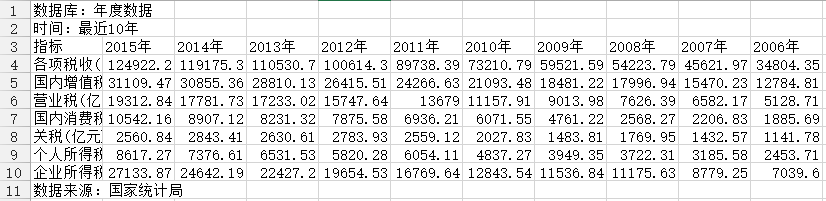
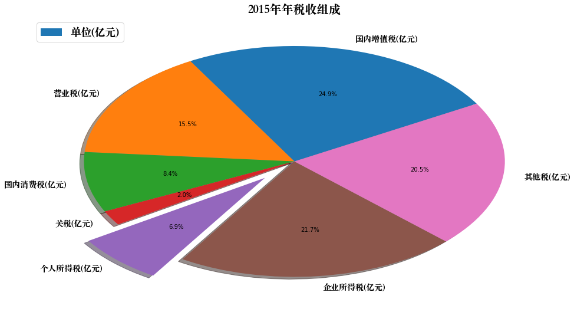

4.1.3 饼图和案例
除了条状图, 饼图也可以用来表示数据.用pie()函数制作饼图很简单.
from pandas import Series, DataFrame
import pandas as pd
import numpy as np
import matplotlib.pyplot as plt
# 设置图像大小
# plt.figure(figsize=(9,9))
# 设置标签
labels = ['China', 'Japan', 'Korea', 'American', 'Russian']
# 标签对应的值
values = [60, 10, 20, 70, 50]
# 每一个标签饼图的颜色
colors = ['red', '#FEDD62', 'blue', 'gray', 'green']
# 那一块内容需要脱离饼图凸显, 可选值0-1
explode = [0.1, 0.1, 0, 0, 0]
# autopct='%1.1f%%'表示显示百分比
# shadow显示阴影
# startangle 正值表示逆时针旋转
plt.pie(values,
labels=labels,
colors=colors,
explode=explode,
startangle=90,
shadow=True,
autopct='%1.1f%%')
# 设置为标准圆形
# plt.axis('equal')
# 显示图例
plt.legend(loc=2)
plt.show()

饼图案例:
数据截图:  数据来源: http://data.stats.gov.cn/easyquery.htm?cn=C01 数据共7行10列. 2006年-2015年期间国内各项税收收入.
完成任务:
- 计算并显示各项税收所占税收比例，并通过饼图展现.
参考代码: 4.1.3_饼图和案例
from pandas import Series, DataFrame
import pandas as pd
import numpy as np
import matplotlib.pyplot as plt
from matplotlib.font_manager import FontProperties
# 加载字体
font = FontProperties(fname='/Library/Fonts/Songti.ttc', size=18)
# 年份
year = '2015年'
# 加载数据
tax_data = pd.read_csv('国家各项税收.csv',
index_col=0,
skiprows=2,
skipfooter=1,
engine='python')
print(tax_data.iloc[:, :5])
2015年 2014年 2013年 2012年 2011年
指标
各项税收(亿元) 124922.20 119175.31 110530.70 100614.28 89738.39
国内增值税(亿元) 31109.47 30855.36 28810.13 26415.51 24266.63
营业税(亿元) 19312.84 17781.73 17233.02 15747.64 13679.00
国内消费税(亿元) 10542.16 8907.12 8231.32 7875.58 6936.21
关税(亿元) 2560.84 2843.41 2630.61 2783.93 2559.12
个人所得税(亿元) 8617.27 7376.61 6531.53 5820.28 6054.11
企业所得税(亿元) 27133.87 24642.19 22427.20 19654.53 16769.64
# 计算其他税收
other_tax = tax_data[year].iloc[0] - tax_data[year].iloc[1:].sum()
# 绘制饼图
all_tax_data = pd.concat([tax_data[year][1:], Series([other_tax],
index=['其他税(亿元)'])])
# 将个人所得税分离显示
explode = [0.2 if taxname == '个人所得税(亿元)' else 0 for taxname in all_tax_data.index]
# 设置图片大小
plt.figure(figsize=(16, 9))
my_pie = plt.pie(all_tax_data,
labels=all_tax_data.index,
shadow=True,
autopct='%1.1f%%',
explode=explode,
startangle=30)
# 设置饼图显示字体为中文
for txt in my_pie[1]:
txt.set_fontproperties(font)
txt.set_fontsize(14)
# 显示图例
plt.legend(['单位(亿元)'], loc=2, prop=font)
plt.title('%s年税收组成' % year, fontproperties=font, fontsize=20)
plt.show()
